Proyectos
Obras nuestras, en proceso y terminadas. Toque una foto para verla en grande.
Galería de fotos
25 fotos

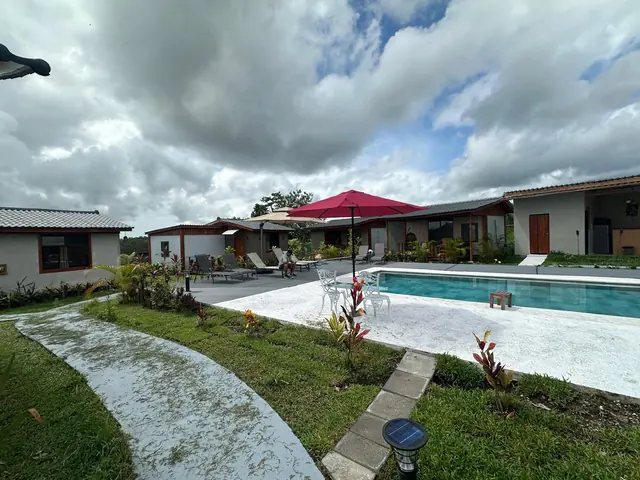

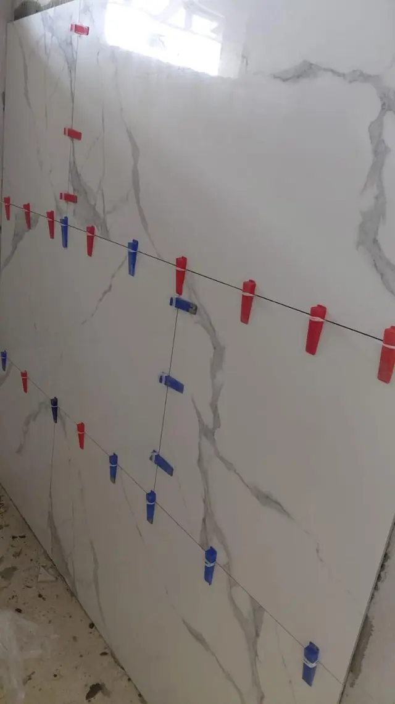


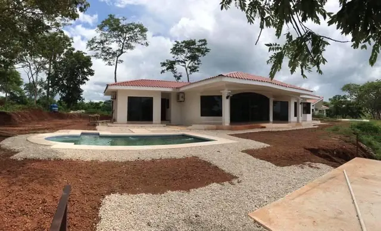


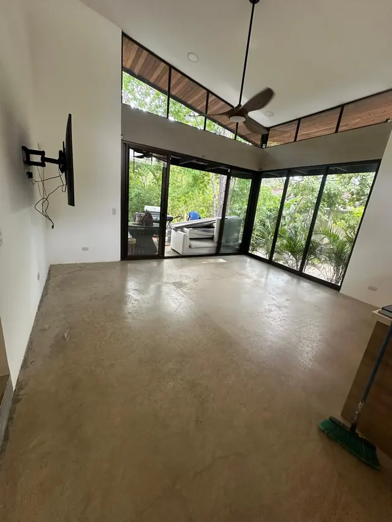

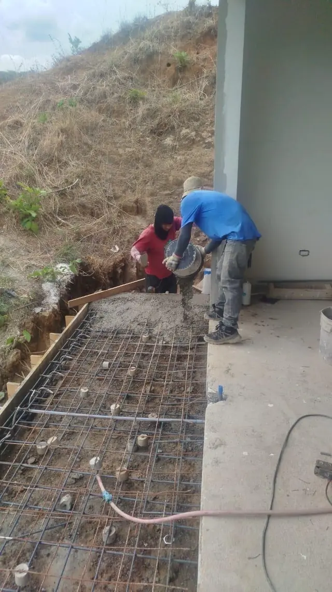


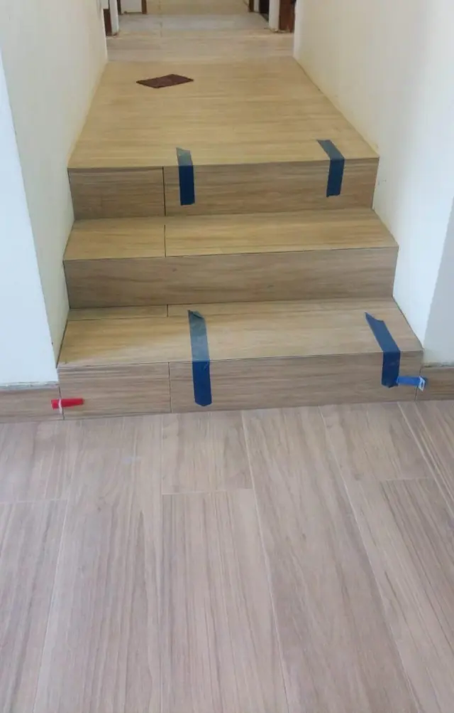

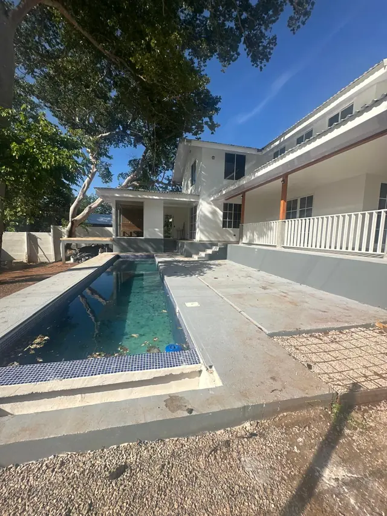

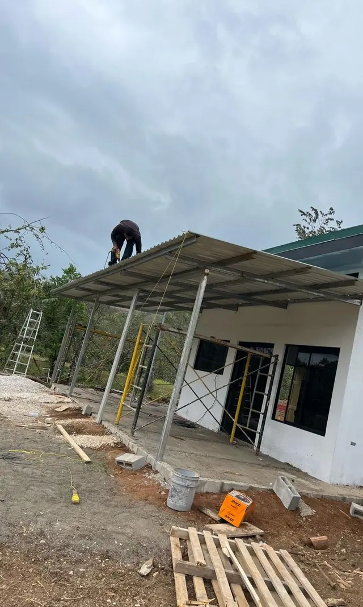


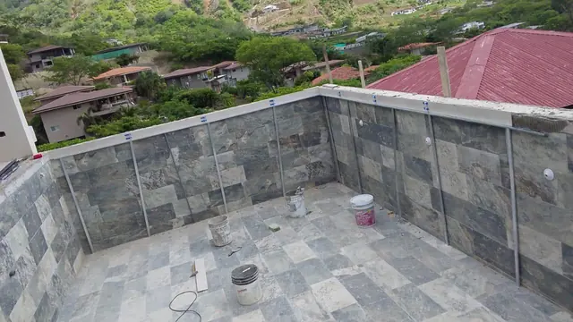

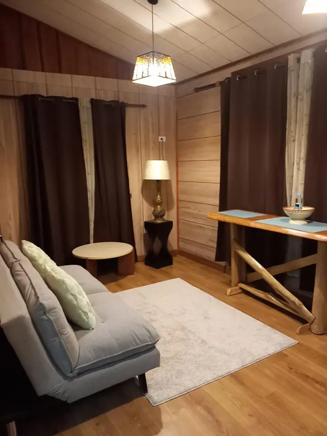

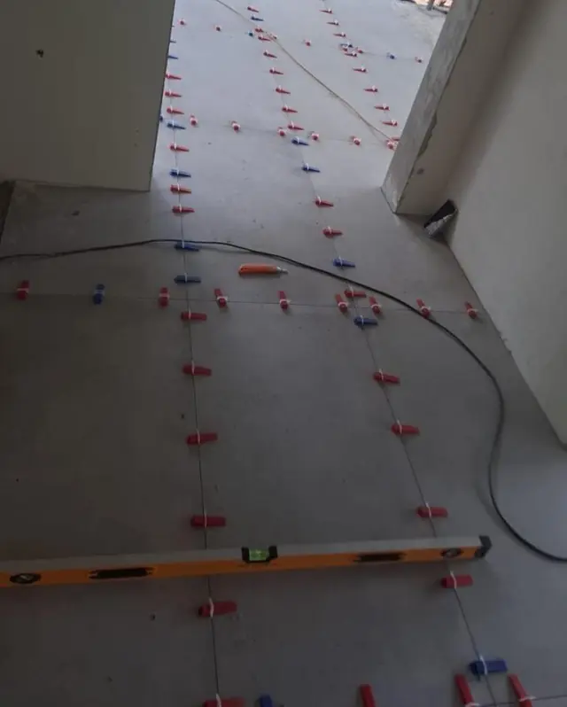

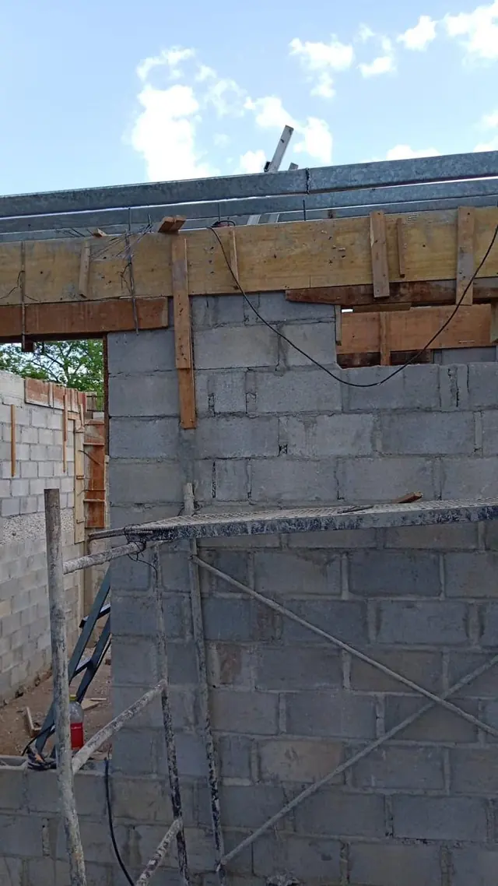

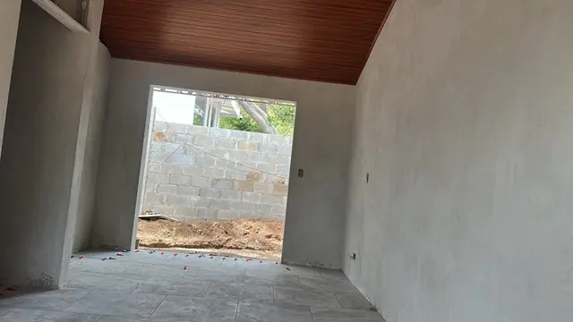
Videos de obra
Tres recorridos cortos, sin sonido.
Constructora VS
¿Vio algo parecido a lo que quiere construir? Mándenos la foto por WhatsApp y le decimos cómo lo haríamos.
- 8666 1519WhatsApp
- Yerimy Valverde Salazar
- 7248 3151Nayeri Valverde
- vs_constructura_Facebook
- vs_constructura_Instagram